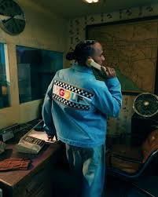
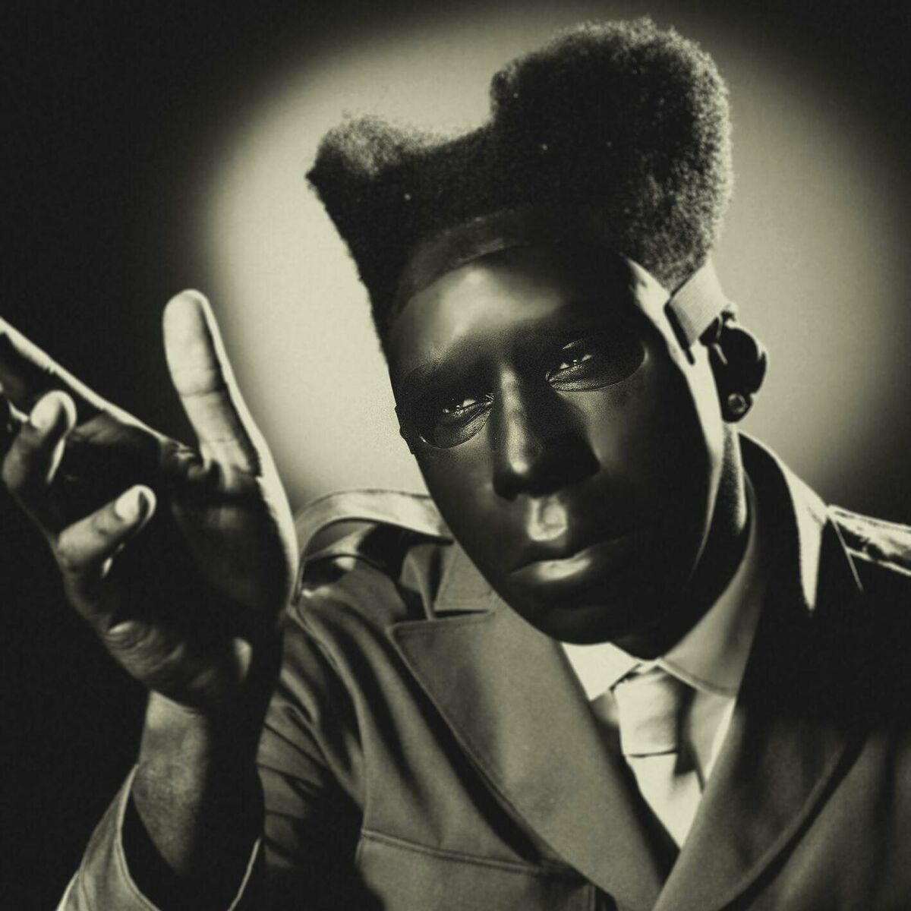

Actualités
CHROMAKOPIA: THE WORLD TOUR

Alors qu'il vient tout juste de sortir un nouvel album CHROMAKOPIA le 28 octobre passé (Columbia), Tyler, The Creator sera en tournée mondiale l'année prochaine : CHROMAKOPIA: THE WORLD TOUR passera par l'Accor Arena à Paris le 27 avril 2025
Tyler, the Creator X Lewis Hamilton
Lewis Hamilton et Tyler, the Creator lancent une collection capsule commune pour le Grand Prix de Las Vegas. La ligne qui combine leur marques respectifs, +44 et GOLF WANG, réunit des vêtements inspirés par l'univers des courses automobiles et l'esthétique streetwear.
Album : CHROMAKOPIA
CHROMAKOPIA est le huitième album studio de Tyler, The Creator, rompant ainsi avec sa longue tradition de sortie de projets tous les deux ans, les années impaires. L'album a été dévoilé pour la première fois avec le teaser du morceau d'introduction, « St. Chroma », le 16 octobre 2024. Tout au long de CHROMAKOPIA, Tyler, The Creator lutte contre les ombres de la maturité, alors que la joie colorée de l'ambition et de la jeunesse s'estompe avec la maturité.